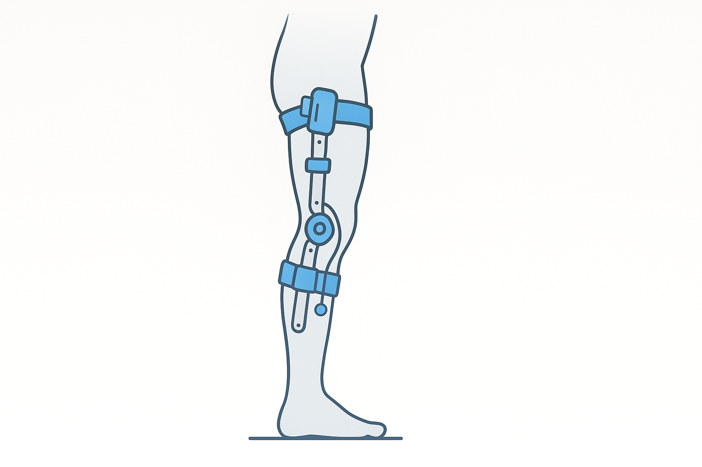
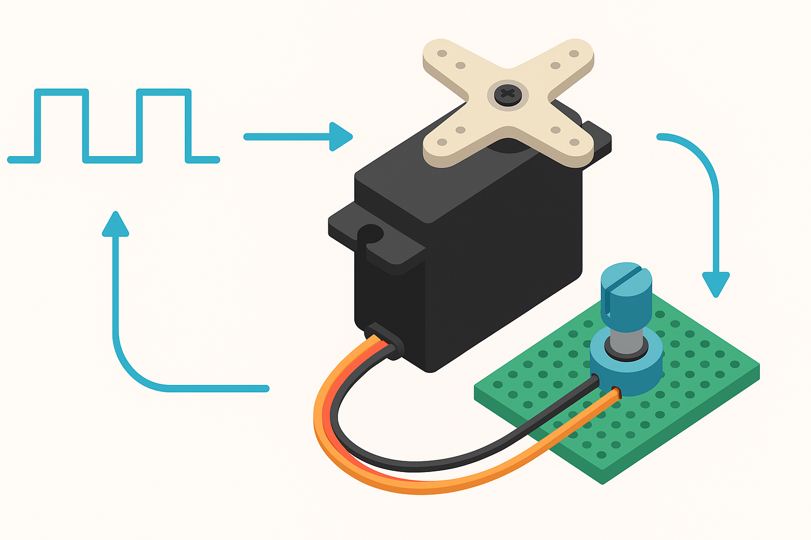
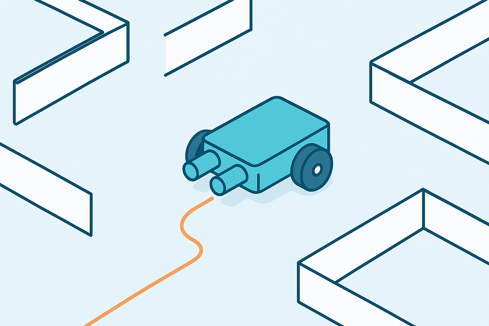
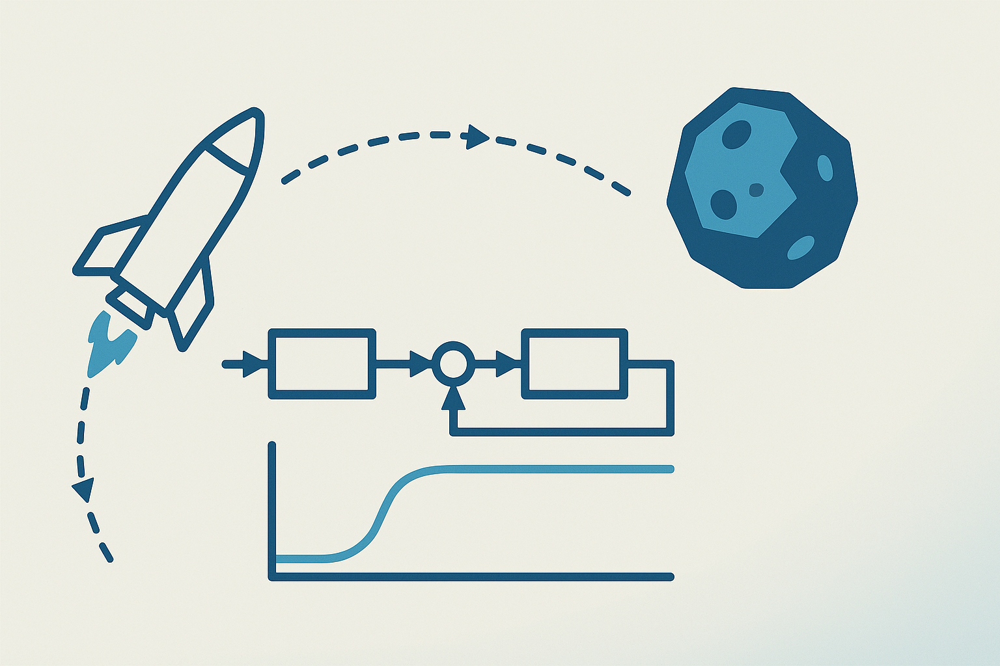
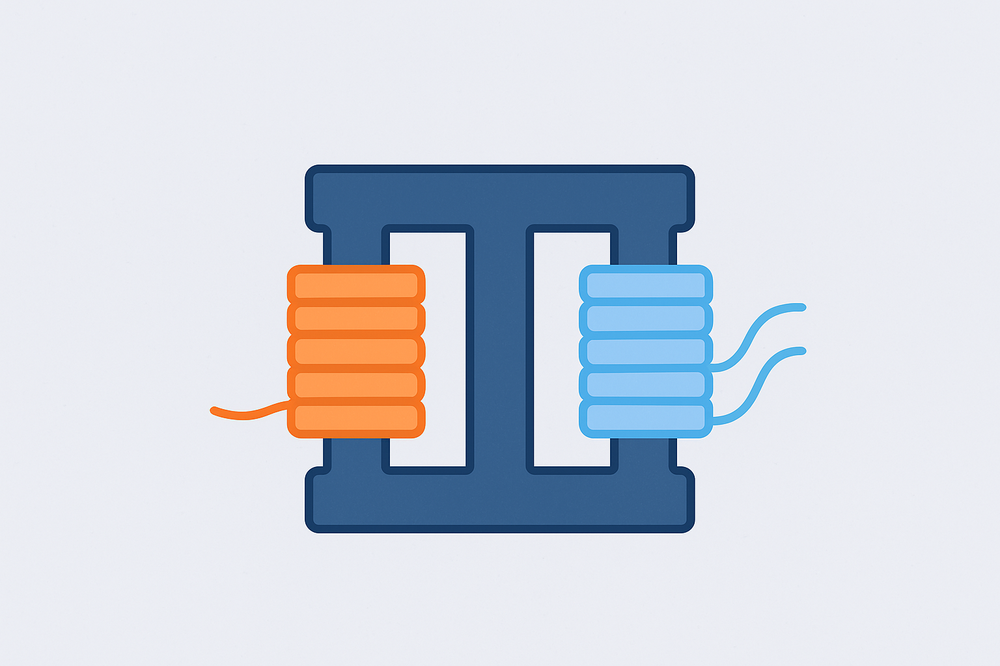

Short notes on what I did and why each matters for mechatronics.

Honours Thesis — Biomechanics & Mechatronics (proposal stage)
In progress · 2025
Exploring sensor-based human motion analysis and control for assistive/rehabilitation. Building a mechatronic pipeline—wearable sensing, signal processing, feedback control—with emphasis on safe, repeatable movement and real-world use.
BiomechanicsMechatronicsSignal processingControl

Robust Digital Position Control (EEE4118F)
Individual GA (with lab partner integration)
Modelled a servo, designed a cascaded velocity–position controller, and implemented a discrete-time control law with anti-windup in C# / Simulink. Focused on robustness and matching simulation to lab behaviour.
ControlDiscrete-timeC#Simulink

FaunaWatch — Smart Predator Detection & Fence Monitoring (EEE4113F, Group 18)
Role: Front-end
Built a lightweight, field-friendly web UI: password gate, media download routes, and Chart.js visuals for detection activity. Turns edge sensing into a usable dashboard for rangers.
Web UIFlaskChart.jsEdge systems

Micromouse — Final Design & Optimisation (EEE3099S, Group 21)
Team project
Designed an autonomous navigation state machine (priority-right, intersection handling, tune state) and began Flood-Fill optimisation. Demonstrated stable maze traversal; documented limits and next steps for real-time path updates.
RoboticsAlgorithmsState machines

Micromouse Sensing Subsystem — IR Wall Detection (EEE3088F)
Subsystem report (individual)
Specified and built the IR sensing PCB producing three analogue distance signals (front/left/right), integrated with STM32F0, and verified power-saving and ambient-light robustness against acceptance tests.
SensorsPCBEmbedded

Kitticopter — Lead Compensator Design & Demo (EEE3094S)
Lab project
Designed a lead compensator to meet overshoot, tracking and settling-time targets. Verified in MATLAB/Simulink and on the hardware rig; compared sim vs demo behaviour.
ControlClassical designHardware demo

Single-Phase Transformer — Design, Build, Test (EEE2044S, Group 11)
Team project
Designed a 3 VA, 15 V → 6 V shell-type transformer (50 Hz), calculated turns/core parameters, simulated in Ansys Maxwell, hand-wound, and tested ratio/efficiency in the lab.
PowerSimulationLab testing